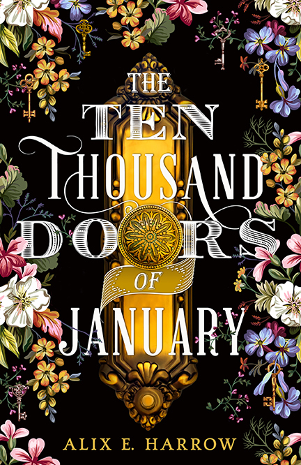

Ten Thousand doors of january
chapter 1:The Ivory Door
chapter 2:The Lonely Door
chapter 3:The Leather-Bound Door
chapter 4:The Silver and Blood Door
chapter 5:The Blue Door
The Ten Thousand Doors of January follows the journey of January Scaller,
a young woman who discovers magical doors to other worlds.
Through her exploration, she unravels family secrets and challenges societal constraints.
This enchanting tale interweaves fantasy, adventure, and self-discovery, inviting readers into a richly imaginative realm.
click to know more
Mail us here
